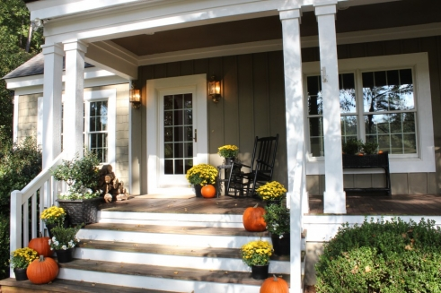
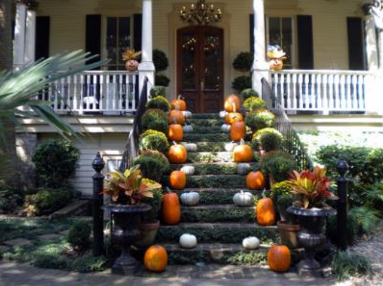

.png)
.PNG)
.PNG)
.PNG)
.PNG)
.PNG)
.JPG)
.JPG)
.PNG)
.PNG)


(Our door – it doesn’t count in the 20. 🙂 )
The other day when I was getting my porch and front entry all ready for this wonderful season, I spent some time on the computer looking for ideas. I ended up with a large number of pictures for my files, and I am putting them together in one post for easy reference next year. You may have pinned many of these, but hopefully some will be new to you. I was amazed at all the creative souls out there!
Let’s begin with this home in Savannah. I thought I had a lot going on with my front steps, but this one really takes the prize!
savannah-georgia-vibe-guide.com
More pumpkins on steps here, but a scarecrow has been added by the door. I used to do a scarecrow every year in our previous home. We had a giant very old hickory tree out by the road, and my scarecrow would sit out by that beautiful tree.
If you don’t have big steps, here is an idea of what to do with pumpkins and mums for a smaller area.
A bench by the door can be a great place to have a display. Isn’t that arrangement in the pumpkin wonderful?
This one is one of my favorite fall doors. I like the simplicity of the grouping, and of course, that arched door looks so cottage-y. Who could resist?
If you have giant urns by your door, you can add gourds to them to give it a seasonal element as has been done here.
You can’t really see a lot here besides a pumpkin, some mums, and a wreath, but I included it because I love a red door.
I laughed out loud at the cleverness of this one. Who doesn’t have leaves in the fall, and what better way to use them than in a door display? (and with the rake too!) Very cute.

Pottery Barn puts on the leaves in their display too. potterybarn.com
potterybarn.com
And the door at Mary Carol Garrity’s home (Nell Hill’s) looks in the mood for fall with its leaves and branches. The architectural elements by her door are amazing!

Here is another house that uses branches of leaves for their autumn display. source
source
Or perhaps you have cornstalks that you can use. They always add a big impact. thistlewoodfarms.com
thistlewoodfarms.com
I thought the hanging bats were a creative idea in this one from Martha. marthastewart.com
marthastewart.com
A table on the porch would be super handy for setting up a display, and aren’t those pumpkins spelling out “fall” a cute idea?
I found this door at bhg, and I adore it with its little side windows. Of course I love the mums and the white pumpkins marching up the steps.
And then, I found the same house decorated a little differently at the Lowes’ site. How about that?!
Now let’s go in a different direction…something simpler. Susie Harris’ wreaths are beautiful, and she made them herself. You can get the full directions at her blog if you would like to make one like hers.
Even more simplicity here. The double doors with bundles of twigs and other fall items is very pretty too. lessthanperfectlifeofbliss.blogspot.com
lessthanperfectlifeofbliss.blogspot.com
And finally, we are looking out this door from the entryway inside, but you can see that they have a lot going on with their porch…a table, cornstalks, mums, pumpkins…the whole gamut.
I hope these will help you next year if you have already done your door for fall. If you haven’t, maybe something here has sparked your creativity. Then you can get busy on it this weekend!
Have fun!


.PNG)
This is the most charming blog I’ve seen in years! Can’t wait to see your Christmas front doors — I do hope you post a similar post to this one!
I know this sounds spammy but this is a very nice post on the doors. Each year I plan something big and each year, I don’t. I’ll keep this bookmarked.
Eva
————————————————————————–
Eva – Yes, that sounded spammy, but I appreciate your comments! 🙂 Do keep the post bookmarked, and hopefully next year you will get your door done. (But it is not too late to do it this year!)
Kelly
Call the paramedics! My heart stopped when I saw Mary Carol Garrity’s front door…magnificent…as all of the others are too…great selection of fabulous fall doors and porches!
———————————————————————-
Shirley – How funny!! That door is spectacular. Wouldn’t it be great to visit her shop…oh and better yet, tour her house for the holidays!!
Kelly
Such beautiful entries! I must say, yours is one of my favorites 🙂 I’m dreaming of a front porch and big, wide front steps one day!
———————————————————————
Lindsay – Aw, thanks! Our old house had super duper wide front porch steps. They make these look look tiny. In fact, we used to joke that they looked like stadium seating!
Kelly
Beautiful front porches!! If their front porches are that awesome don’t you wonder what the insides look like. I bet just as incredible.
———————————————————————
Debra – I bet you are right about the interiors of those homes! I’d love to see how those rooms look too.
Thank you for visiting the blog. I hope you have a great day!
Kelly
Thanks for sharing all of the beautiful doorways including yours! I came over from Cozy Little House. Happy Fall!
Judy
———————————————————————
Judy – I’m so glad you came by for a visit! Welcome! I appreciate your kind words so much. Please come back again. I LOVE getting comments on the blog. Happy fall to you, too!
Kelly
Kelly,
They are all lovely, there are a few I hadn’t seen before. Such a great time of year for home exterior decorating.
Have a great weekend.
Karen
———————————————————————–
Karen – So glad you liked all the fall doors. It is the beginning of what I call “the decorating season.†It just rolls on from now through Thanksgiving and Christmas with so many beautifully decorated homes. I am going to be stuck on fall decorating posts for awhile since I just love all of it.
Kelly
Kelly, love this post. I do love looking at front doors and the beautiful display of fall. I think it’s one of the most important places to decorate since it’s the first impression when someone comes to my home. I really love the one with the arched top and the cute pumpkins sitting on the ledge above another. Thanks for finding all these great photos! Have a great weekend!
———————————————————————-
Patty – I loved that arched door one too, and wasn’t that so smart to line up those pumpkins up there? I like getting the outside done first so that at least it gets you in the mood for the season. Then I can fool with the inside at a little (alright…a lot) slower pace. 🙂 Thank you for leaving your sweet words here.
Kelly
I Love looking at other people’s doorsteps during this time of year. It is so inspiring and exudes such a happy feeling. These are lovely examples. If you have a moment please come check out my post today on Autumn and Halloween Doorsteps from my neighborhood. Have a great day!
x
http://www.homesweetabode.blogspot.com
————————————————————————–
Apron Girl – So glad you came by to visit! I popped over to your place, and you have some creative homes featured with Halloween decor. Your candy treats looked wonderful, and you have some fantastic photography going on on your site! Please come back to visit again.
Kelly
Love, love, love them all! I’m so enjoying all of these seasonal displays since last fall we were in New Zealand and next fall we will be in the middle of the Southern Indian Ocean. Makes one appreciates what one does not have… 🙂
Thanks for sharing all these great photos, Kelly!
Cath
P.S. Oh, and by the way, it did snow the other night and we now have 6 cm (about 3 inches) of snow over everything. Not to worry though as this weekend it is supposed to warm up again. Yes, I too love the snow but one does get tired of it with arrival in October and not leaving until April, May or, in some years, June!!! Really!!!???
———————————————————————–
Cath – I too love the seasonal fall displays, but just wait until Chrismas. I could do Christmas all year if they would let me! Snow…I am soooo jealous!! 3 inches in October?! Wow.
Kelly